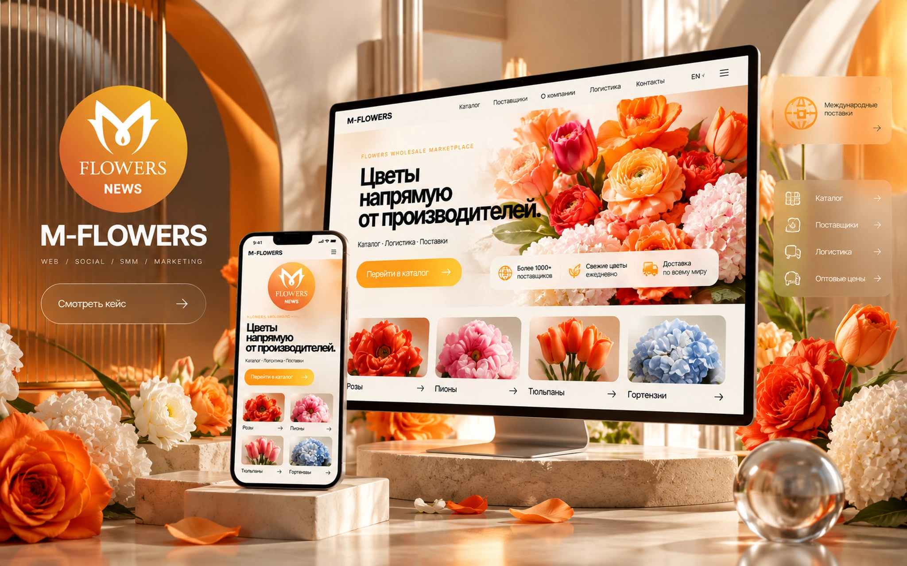
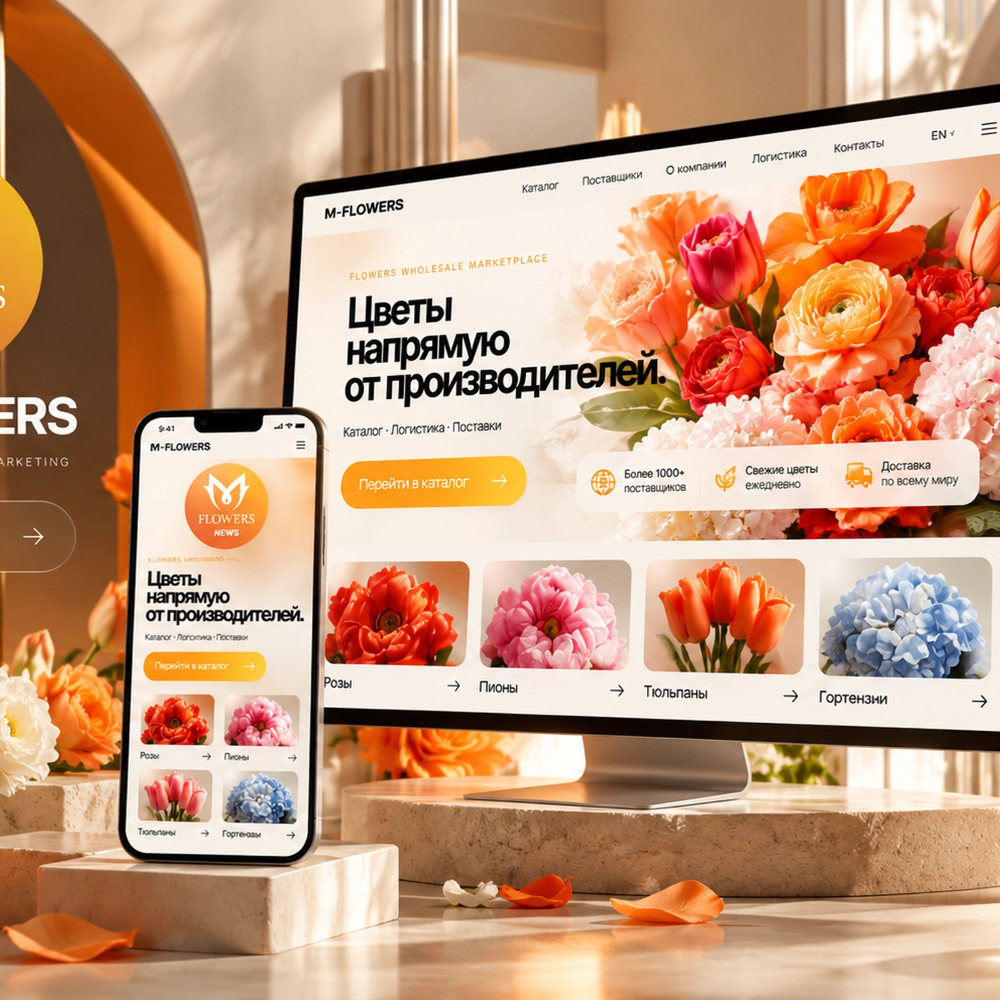
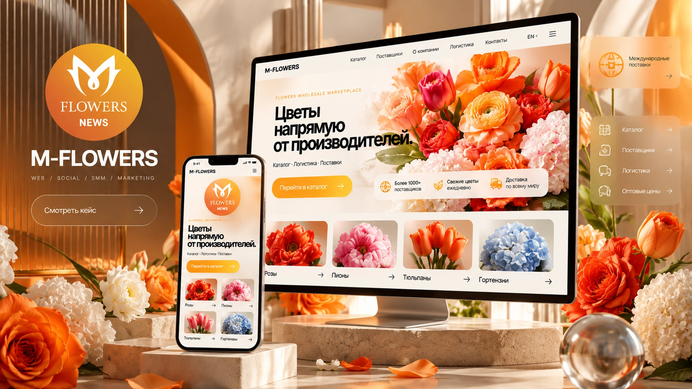

Проект / M-Flowers
M-Flowers
Digital-система для цветочного бизнеса: сайт, социальные сети, SMM и маркетинговая связка в одном визуальном языке.

Собрать бренд
в одну систему.
Для M-Flowers важно было показать не просто отдельные макеты, а цельную digital-среду вокруг продукта: сайт, визуальную коммуникацию, контент и маркетинговые точки контакта.
В кейсе я показываю логику работы — от структуры и визуальной подачи до контента и связки каналов.


Digital-площадка для бизнеса
Разработал и оформил сайт: структура, визуальная подача, пользовательский путь и логика каталога. На первом плане — понятная навигация, категории, поставщики и удобная работа с ассортиментом.
Открыть реальный сайт ↗Единый визуальный язык
Упаковал социальные сети так, чтобы они продолжали сайт: единая подача, визуальные шаблоны, обложки, форматы постов и stories, а также понятная система для регулярного контента.
Контент и коммуникация
Проработал идеи и форматы контента, визуальную подачу и коммуникационные сценарии. Цель — раскрывать продукт последовательно, а не превращать ленту в набор несвязанных публикаций.
Связать точки контакта
Связал сайт, соцсети и рекламные материалы в одну систему. Клиент должен видеть один бренд независимо от того, где он впервые с ним столкнулся.